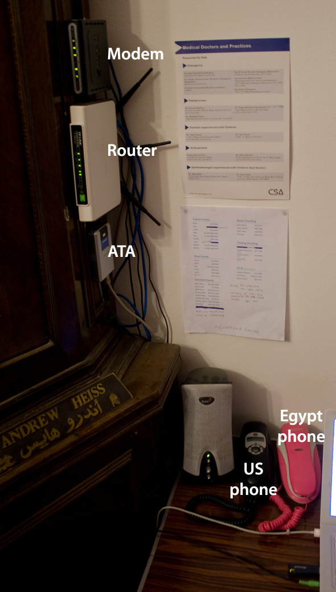

Using Google Voice and Gizmo Project Together
Google Voice, the Google-ized incarnation of GrandCentral, is a fantastic service that aims to become your virtual phone switchboard. It gives you a free phone number that can receive regular phone calls and route them to any other actual phones you have connected to your account. Powerful stuff.
Unfortunately, though, its forwarding abilities are limited to US phones. Using some VoIP magic, though, you can create a semblance of international forwarding and get free (or nearly free) phone calls to the US while abroad. If you’re not in a foreign country, you can harness the same VoIP magic to get a nearly free phone service.
The Gizmo Project—background
Gizmo (formerly http://gizmo5.com/pc/) is normally a VoIP provider that lets you make free (or super cheap—something like $0.019 a minute) phone calls. When you sign up for an account you get a special phone number in the 747 area code as your VoIP/Gizmo username. While any phone on the Gizmo network can call your 747 number for free, regular phones can’t connect to it.
Gizmo offers a Call In service that lets you buy a phone number in most US area codes (or one of dozens of countries), which then lets you receive phone calls from standard phones. Call In numbers start at $35 a year (or $12 a year for three months), but prices can be higher depending on demand.
Gizmo touts itself primarily as software—it provides a “soft phone” program that you run on your computer. As long as the program is open you can make and receive phone calls (much like an IM program or Skype) using a microphone and your computer’s speakers or headphones.
Gizmo without a computer
It’s impractical to keep your computer on all the time and it can be awkward to use your computer as a phone. You can get around this limitation by buying an ATA adapter—a little box that plugs into your network with the sole purpose of running phone services. It’s essentially a hardware version of the Gizmo soft phone.
Fancy corporate VoIP phones (like the ubiquitous Cisco ones) have ATAs built in (kind of. The real ATA is somewhere on the network letting these computer-phones connect to it). You don’t need a fancy VoIP phone, though. Standard consumer ATAs let you plug regular phones directly into the adapter.
{kind=link}
After configuring the ATA with your Gizmo information you can make and receive calls using your Call In number. Rather than pay $40+ a month for regular phone service, you can have a fully featured phone that only costs $35 a year plus <$0.02 a minute.
Before Google Voice
For the past three years we’ve been using Gizmo as our full-time phone. We bought a Linksys/Sipura ATA (our model, the SPA1000 is no longer manufactured), got a $10 phone from Target, and bought a Utah county 801 Call In number. The phone worked perfectly. I could plug the ATA in to any internet connection and get cheap/free phone service.
Our system even works (mostly) in Egypt. I have two phones on my desk: the $10 Target phone plugged into the ATA (which is plugged into the router) and a 20 EGP neon pink phone (plugged into our Egyptian phone line). Family, friends, and unsuspecting telemarketers can reach us at our Utah number and pay only what it costs them to call an 801 number.

Our current phone set up
The only problem with the system our system in Egypt is a bizarre limitation with Egyptian (or at least Link.net’s) internet infrastructure. We don’t have any bandwidth issues when someone calls us, but when we call out, the connection drops within the first ten seconds of the call 90% of the time. To get around this, we used some SkypeOut credits—we’d call someone in the States with Skype (using my computer), tell them to call us on our Utah number, hang up, and wait for their call.
This worked when we called actual people, but doesn’t work when calling banks, insurance companies, airline companies, or anything else with a phone tree—phone trees can’t call you back. SkypeOut works for those, but it’s more expensive than Gizmo.
Google Voice changes all this.
Enter Gizmo Voice
Google and Gizmo have joined up to let you hook Google Voice directly into your Gizmo account. Rather than buy a Gizmo Call In number, I can use my free Google Voice number with my Gizmo Account. After following Gizmo’s instructions on connecting the two accounts, now when people call my Google Voice number, the call is routed to the normally inaccessible 747 Gizmo number, which is already associated with my ATA box.
This means I can stop paying $35 a year for my Call In number. The only thing I pay for is the phone use itself. Gizmo just changed their phone rates for users using Google Voice—apparently all calls under three minutes are free, while longer phone calls follow their normal low rates.
Additionally, now that I can have my Gizmo phone connected to my Google Voice account, my bizarre issue with calling out on Egyptian internet can be solved. In order to call people and have your Google Voice phone number appear on their caller IDs, you need to use Google Voice as an intermediary. You type in the number you want to call on their website and they’ll call one of your linked phones. When you pick up, your phone will start dialing the outbound number. Since Google calls my Gizmo phone now to make outbound calls, Link.net considers it an inbound call and it doesn’t get cut off.
So now, Gizmo combined with Google Voice gives me free short calls and cheap long calls to the US and a free US number that can replace my Gizmo Call In number. Everything works both in the States and internationally. It’s a nearly perfect system.
Still untested Now tested…
In theory, since I have my Gizmo and GV accounts linked, my Google Voice number should show up on the recipient’s caller ID when I call out with my US phone, circumventing the need to use the Google Voice web site as the middleman. I can’t test it, though, since my internet connection won’t let me make any outbound calls with my ATA. I’ll keep trying over the next week, since I can make like 10–15 second calls 10% of the time.
It works! My Google Voice number shows up, just like it should…
Update
Google has acquired Gizmo5, which hopefully means that the link between Gizmo and GV will be more permanent and more official. Awesome.